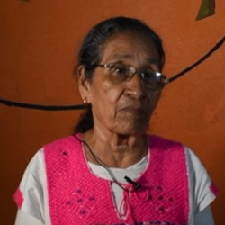
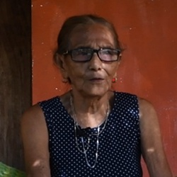
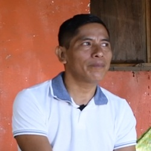
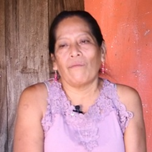
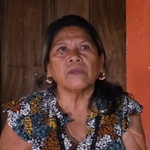
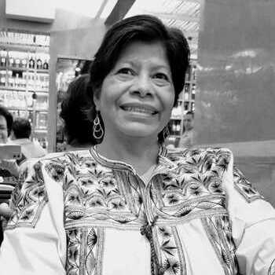
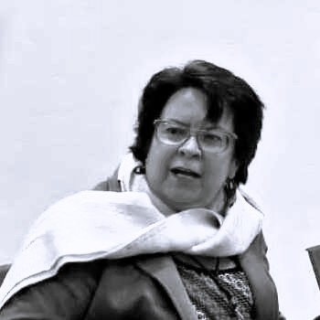
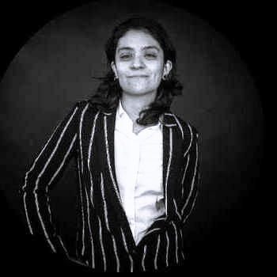

ocío Mesino, (1974- 2013) fue lideresa de la Organización Campesina de la Sierra del Sur, pugnó por la presentación con vida de las personas desaparecidas en la década de los setenta, los derechos de los campesinos, la justicia y por el esclarecimiento para los casos de represión política en Guerrero. Enfrentó persecución, criminalización y violencia política hasta que en 2013 fue asesinada. Su familia continúa exigiendo justicia para que su asesinato no quede impune.
lla nació en la comunidad del Escorpión, Municipio de Atoyac de Álvarez, en el Estado de Guerrero. Hija de Hilario Mesino Mesino, fundador de la Organización Campesina de la Sierra del sur. (OCSS); y de la Sra. Alicia Mesino Castro.

Me gustó la presentación, me gustó el corto dodumental de Rocío.

A mí me gusto casi todo el documental, trató de donde ella anduvo y todo lo que hizo, y todo lo que ella decía que al gobierno no le gustaba porque ella era una luchadora. Me gusto también de que ella cuando andaba en las comunidades haciendo lo que los demás no hacían, ella es una mujer muy valiente, no tuvo miedo de nada.

Fue una experiencia muy bonita porque se buscó un lugar emblemático, la comunidad de San Juan de las Flores donde Rocío estudió su primaria, su secundaria y además ahí, ella regreso cuando se graduó como técnica agropecuaria. Ella regreso aquí a la sierra y la comunidad de San Juan de las flores fue una de las comunidades emblemáticas donde se fundó también un grupo de la OCSS que fueron de los primeros compañeros que iniciaron con la lucha en el año del 94.

En lo personal a mí me gustó muchísimo, y también esto nos ayuda a que no se pierda la esencia de la lucha de Rocío, ella era la más chiquita de nosotros y yo, orgullosa de mi padre, de mi madre, de mis hermanos, de todos porque ellos emprendieron esto y ellos no van a morir mientras nosotros no los olvidemos y vamos a seguir exigiendo justicia.

Me pareció muy bonito, me pareció un cortometraje muy bien porque hablo de mi hermana, de toda su vida, desde que ella empezó la lucha social, y porque ella fue una luchadora social muy reconocida hasta el final.

Doctora en Ciencias Políticas y Sociales con orientación en Sociología... Leer más
Sus líneas de investigación son: Desaparición Forzada, Memoria histórica, Antropología Forense y Fosas Clandestinas. Entre sus publicaciones destacan: en coautoría con Rangel Lozano, C. (2015). Los retos de la justicia transicional en México y la reparación integral del daño: una tarea pendiente en Atoyac. En C. Rangel Lozano y E. Sánchez Serrano (coords.), México en los setenta. ¿Guerra sucia o terrorismo de Estado? (pp. 269- 296). Guerrero: Itaca/Universidad Autónoma de Guerrero; (2012). El proceso de construcción de la identidad política y la creación de la policía comunitaria en la costa-montaña de Guerrero. Universidad Autónoma de la Ciudad de México. Producto de la tesis de doctorado; (2012). Terrorismo de estado y represión en Atoyac, Guerrero durante la guerra sucia y afadem: Desaparecidos (presentación). En A. Radilla Martínez y C. Rangel Lozano (coords.), Desaparición Forzada y terrorismo de estado en México. Memorias de la represión en Atoyac, Guerrero durante la década de los setenta (pp. 137-178 y 179-216). México: Plaza y Valdés; (2014). Las políticas de reparación a víctimas en Atoyac, Guerrero a partir de la sentencia de la Corte Interamericana de Derechos Humanos. En E. Sánchez Serrano, G. Ferrer y C. Rangel Lozano et al., Del asalto al Cuartel Madera a la reparación del daño a víctimas de la violencia del pasado. Una experiencia compartida en Guerrero y Chihuahua (pp. 271-322). Editorial Juan Pablos/cesop-Universidad Autónoma de la Ciudad de México.

Doctora en Ciencias Políticas y Sociales por la Facultad de Ciencias Políticas y Sociales de la UNAM... Leer más
Sus líneas de investigación son Desaparición forzada en México, Violencia sexual y relaciones de género, Identidades y religiosidad en Guerrero. Algunos de sus libros publicados son: Rangel, Lozano Claudia E. G. y Evangelina Sánchez Serrano (Coords.) México en los setenta ¿Guerra sucia o terrorismo de Estado? Hacia una política de la memoria, México, 2015, Itaca, 297pp.; Ferrer Vicario Gil Arturo; Rangel Lozano Claudia E. G.; Sánchez Serrano Evangelina; Valqui Cachi Camilo; Olmedo Muñoz Iliana; Solís Téllez Judith; Alarcón Sánchez Silvia Guadalupe; Salgado Román Juventina; Manzano Añorve Ma. De los Ángeles Silvina; Bustamante Álvarez Tomás; Gatica Polco Daniel. Violencia, memoria y rebeliones: hacia un cultura de paz, Ed. Itaca, México, 2018, ISBN (Itaca): 9786079808358, ISBN (UAGro): 9786079440510, pp. 246, tiraje: 1000 y Sánchez Serrano Evangelina; Rangel Lozano Claudia E. G. Desaparición forzada y antropología forense en México: una asignatura pendiente, en: Dutrénit Bielus Silvia (Coord.) Perforando la impunidad: historia reciente de los equipos de antropología forense en América Latina, 1ª edición, Ed. Instituto de Investigaciones Dr. José María Luis Mora – Serie: Contemporánea. Internacional, México, 2017, ISBN (rústica): 9786079475758 ISBN (tapa dura): 9786079475765, pp. 408, tiraje: 1000.
Licenciada en Ciencias Sociales por la Universidad Autónoma de la Ciudad de México...

Originaria de la Ciudad de México, egresada de la carrera de Comunicación y Periodismo... Leer más
Licenciada en Comunicación y Periodismo por la Universidad Nacional Autónoma de México, ha colaborado en documentales, laborado en edición y postproducción en televisión, con experiencia en fotografía, realización audiovisual, marketing y diseño web. Disfruta ser cinéfila, viajar, andar en bicicleta y tocar la batería.
Pasante en la Licenciatura de Historia y Sociedad Contemporánea por la Universidad Autónoma de la Ciudad de México... Leer más
Participó en el proyecto “La continuidad del delito de desaparición forzada y recuperación de la memoria histórica”, en el que fue parte de la investigación y construcción del registro (base de datos) de personas víctimas de desaparición forzada durante los 60’s y 70’s. Formó parte de de la organización del “Encuentro Nacional sobre Desaparición Forzada en México”. También participó en la organización y como ponente en las “Jornadas Estudiantiles sobre Historia, Memoria y Violencia en América Latina”. Experto en análisis y proceso de información, así como en el uso de nuevas tecnologías.